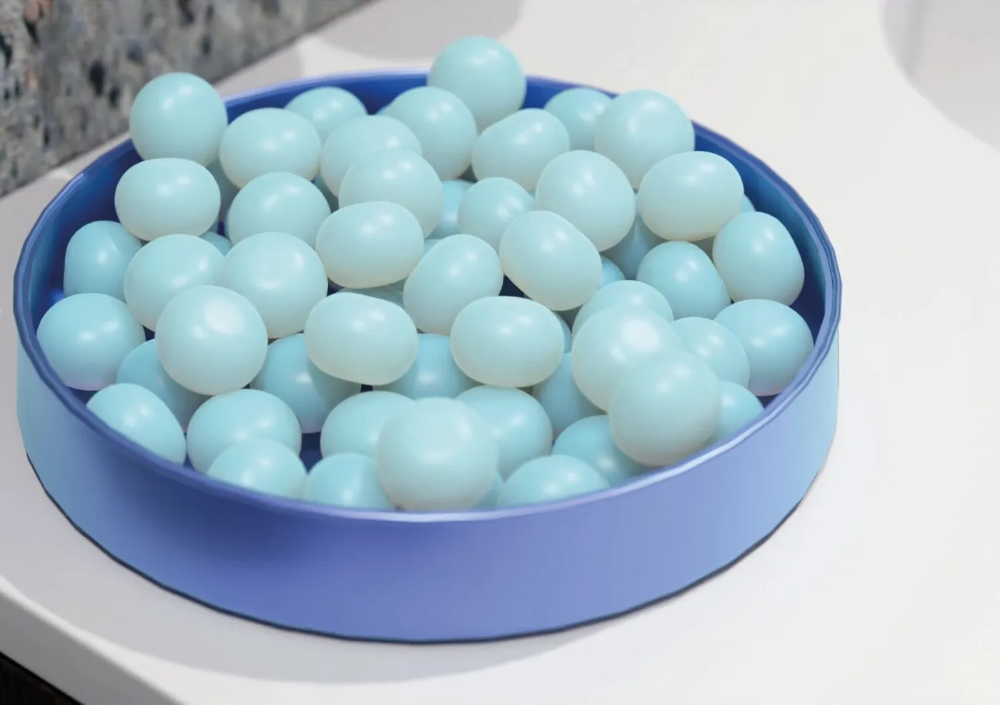
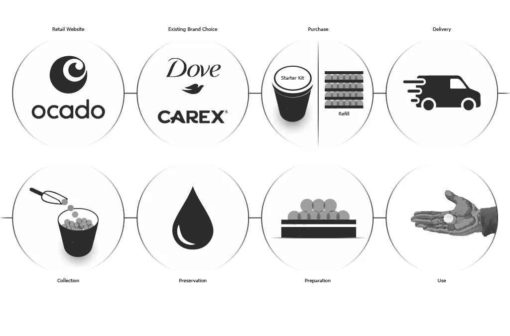
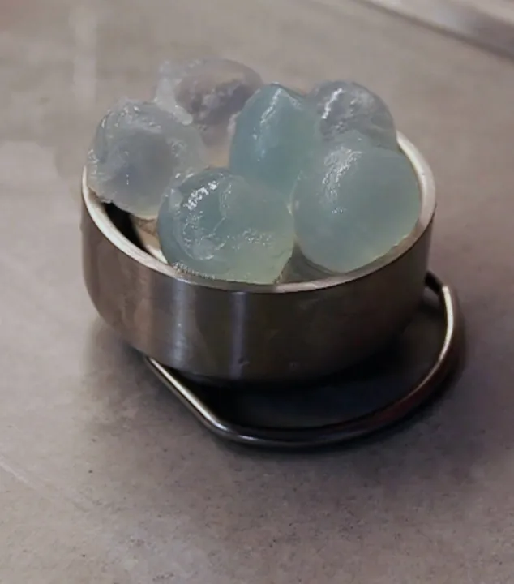
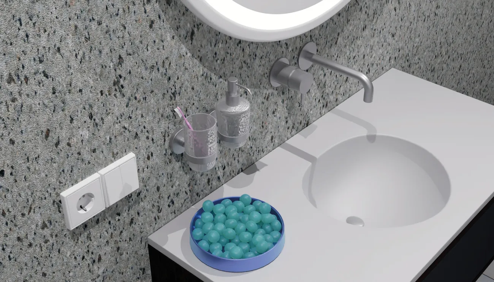
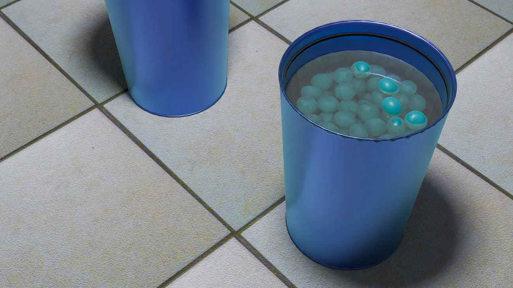

Sustainable Product Design2020–21
SOAP BROS
Sustainable Product and System Design
How might we reduce water waste when washing our hands?

The SOAP BROS system uses zero single use plastic and is a fun hand washing solution saving about 1L of water per wash.
On average, people use 1.4 litres of water when washing their hands. 1 litre of this is wasted by wetting the hands with too much water and leaving the tap on when not in use (getting soap, making a lather and scrubbing). Impacted by climate change, water shortages are an increasingly serious and imminent global problem, currently given limited attention. Widespread products like power showers and power taps use even more water than required.
Consumer Journey and System Integration


Making a soap orb
The soap orbs were made using water, soap, sodium alginate and calcium lactate and could be produced in a few hours. Despite being able to create the main product, the volume needed to test the entire system was too high. I used Blender to model further user touchpoints; at the sink, in the tub on the bathroom floor, in the delivery crate. This gave an overview of the whole system.

